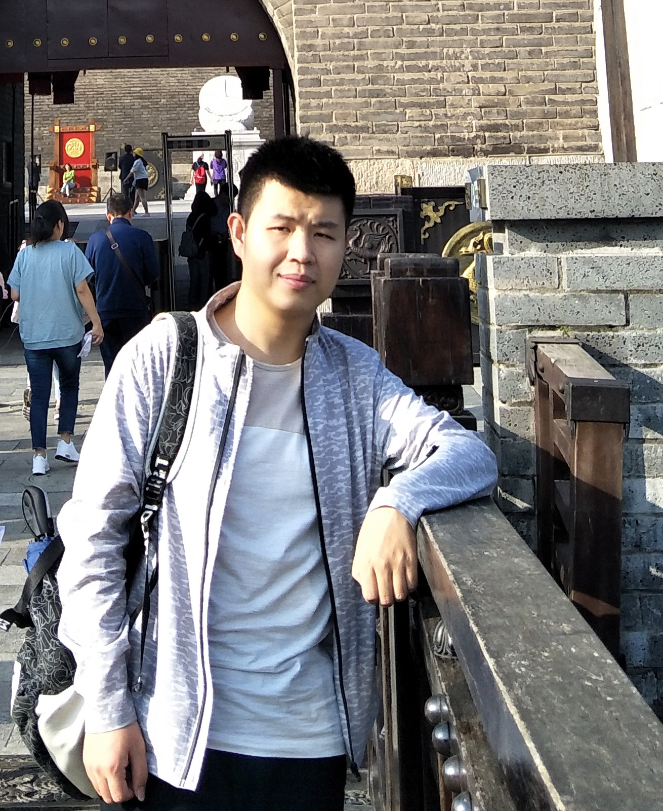

|
Guo, Hao (郭浩)
|

|
Research Assistant,
Key Laboratory of Multifunctional Nanomaterials and Smart Systems,
Suzhou Institute of Nano-Tech and Nano-Bionics, Chinese Academy of Sciences
No.398 Ruoshui Road,
Soochow City, China
E-mail: haoguo365@gmail.com
|
About me
I am a research assistant at the Key Laboratory of Multifunctional Nanomaterials and Smart Systems at Chinese Academy of Sciences. Previously, I was Graduate Research Assistant at the Printable Electronics Research Center at Chinese Academy of Sciences. I received my master degree of Physical Chemistry from Shanghai University where I explored inkjet 3D printing process. I have a background in 3D Printing, Printable Electronics and Fabrication Method.
My main research interests include 3D Printing of Functional Microsystems, Wearable Electronics and Soft 3D Micromechanical. I focus on using new additive manufacturing process to fabricate Micro and Nanostructures. In particular, I enjoy to design, build, and observe new manufacturing process.
Research
My research interests include:
-
3D Printing of Functional Microsystems
-
New Fabrication Techniques for Micro and Nanostructures
-
Flexible Electronics
-
Micro/Nanosystems (MEMS/NEMS)
Recent publications
-
H. Guo, T. Hua, J. Qin, Q. Wu, R. Wang, B. Qian, L. Li, X. Shi. (2022) A New Strategy of 3D Printing Lightweight Lamellar Graphene Aerogels for Electromagnetic Interference Shielding and Piezoresistive Sensor Applications. Advanced Materials Technologies. 7 (9), 2101699. (IF = 7.187) [pdf][SI][View at publisher]
-
H. Guo, L. Zhao, B. Qian, R. Wang, Q. Wu, T. Hua, J. Qin, L. Li, X. Shi. (2022) Direct Inkjet 3D Printing Microwires with Small Feature Size by Freezing, Sublimation, and Evaporation Induced Colloidal Nanoparticles Self-Assembly Mechanism. Advanced Materials Technologies. n/a(n/a), 2201132. [pdf][SI][View at publisher]
-
T. Hua, H. Guo*, J. Qin, Q. Wu, L. Li, B. Qian. (2022) 3D Printing Lamellar Ti3C2Tx MXene/Graphene Hybrid Aerogels for Enhanced Electromagnetic Interference Shielding Performance. RSC Advances. 12 (38), 24980. [pdf][SI][View at publisher]
-
Q. Wu, H. Guo, T. Hua, L. Zhao, L. Li, B. (2021) Preparation of Graphene Oxide Liquid Crystals with Long-Range Highly-Ordered Flakes Using a Coat-Hanger Die. RSC Advances.11 (25), 15085. [pdf][SI][View at publisher]
-
Z. Huang, Y. Tang, H. Guo, X. Feng, T. Zhang, P. Li, B. Qian, Y. Xie. (2020)3D Printing of Ceramics and Graphene Circuits-On-Ceramics by Thermal Bubble Inkjet Technology and High Temperature Sintering. Ceramics International. 46 (8), 10096. [View at publisher]
Note: * indicates the co-first author.
Under review
-
H. Guo, J. Qin, Q. Wu, B. Qian, L. Li, X. Shi.A low-binder-content ink system for 3D printing high-density and small feature size 316L stainless steel parts.
Research experience
Assistant Research Fellow, Key Laboratory of Multifunctional Nanomaterials and Smart Systems, Suzhou Institute of Nano-Tech and Nano-Bionics, Chinese Academy of Sciences, June 2019 – Present
-
Introduced freezing and sublimation to direct inkjet printing processes to realize small feature size.
-
Simulated the deposition and sublimation process of the printed droplets on low temperature substrate.
-
Designed and fabricated a flat slit extrusion head to prepare long-range directed graphene oxide liquid crystals (GOLC).
-
Created a 3D printing strategy based on stacking GOLC to prepare lightweight lamellar graphene aerogels (LGA).
-
Explored the electromagnetic interference shielding and piezoresistive sensor applications of LGA.
Graduate Research Assistant, Printable Electronics Research Center, Suzhou Institute of Nano-Tech and Nano-Bionics, Chinese Academy of Sciences, March 2017–June 2019
Education
Master of Physical Chemistry, Shanghai University, June 2019
Bachelor of Processing and Molding of Polymers, Zhengzhou University, June 2016
A brief cv.
|